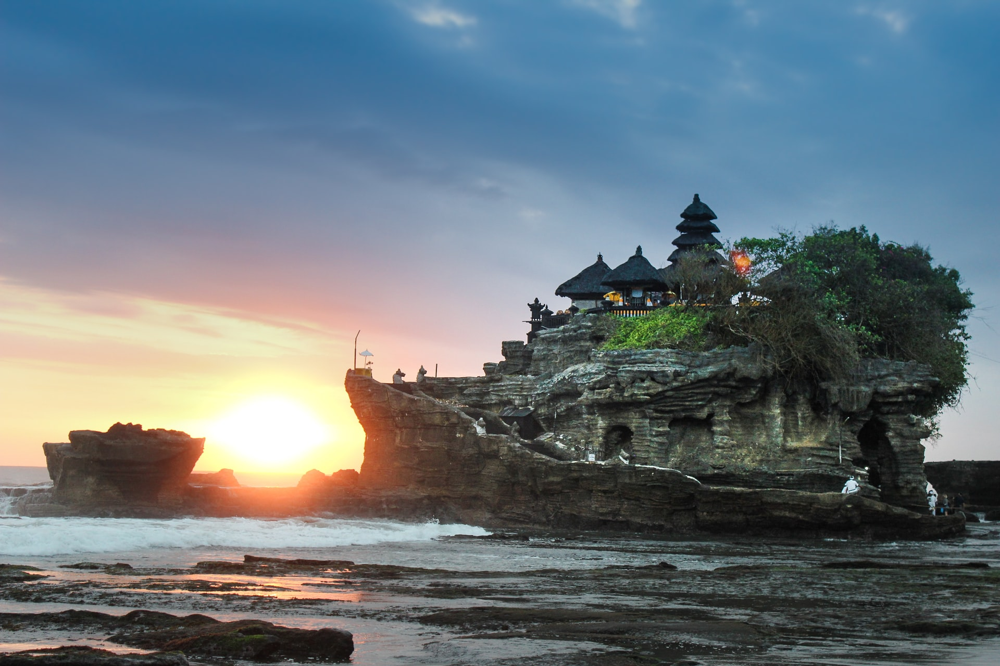

-

Barcelona
Barcelona the cosmopolitan capital of Spains Catalonia region is known for its art and architecture. The fantastical Sagrada Familia church and other modernist landmarks designed by Antoni Gaudi dot the city.
-

Hawaii
Hawaii is a state in the Western United States, located in the Pacific Ocean about 2,000 miles from the U.S. mainland. It is the only U.S.
-

London
London, the capital of England and the United Kingdom, is a 21st-century city with history stretching back to Roman times. At its centre stand the imposing Houses of Parliament, the iconic ‘Big Ben’ clock tower and Westminster Abbey, site of British monarch coronations.
-

Miami
City of Miami website allows residents and visitors to read about key services, important news and other government information.
-

Munich
Munich, Bavarias capital, is home to centuries-old buildings and numerous museums. The city is known for its annual Oktoberfest celebration and its beer halls, including the famed Hofbräuhaus, founded in 1589.
-

New York City
New York City comprises 5 boroughs sitting where the Hudson River meets the Atlantic Ocean. At its core is Manhattan, a densely populated borough that’s among the world’s major commercial, financial and cultural centers.
-

Paris
Paris, France's capital, is a major European city and a global center for art, fashion, gastronomy and culture. Its 19th-century cityscape is crisscrossed by wide boulevards and the River Seine.
-

Sydney
Sydney, capital of New South Wales and one of Australia's largest cities, is best known for its harbourfront Sydney Opera House, with a distinctive sail-like design.
-

Tokyo
Tokyo, Japan’s busy capital, mixes the ultramodern and the traditional, from neon-lit skyscrapers to historic temples. The opulent Meiji Shinto Shrine is known for its towering gate and surrounding woods.
-

Bali
The town of Ubud, in the uplands of Bali, Indonesia, is known as a center for traditional crafts and dance. The surrounding Ubud District’s rainforest and terraced rice paddies, dotted with Hindu temples and shrines, are among Bali’s most famous landscapes.